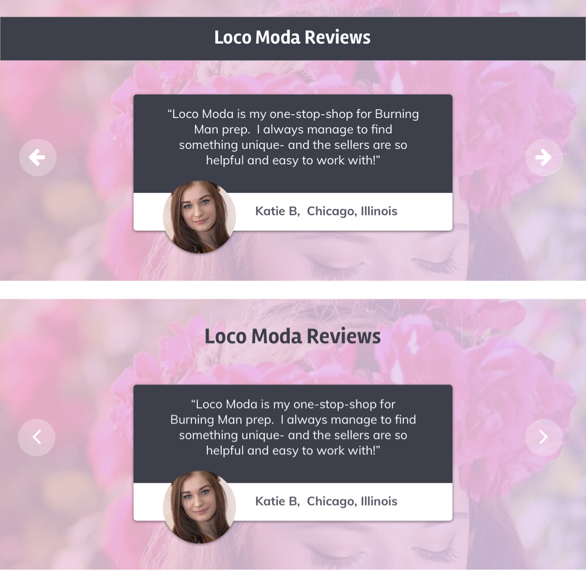
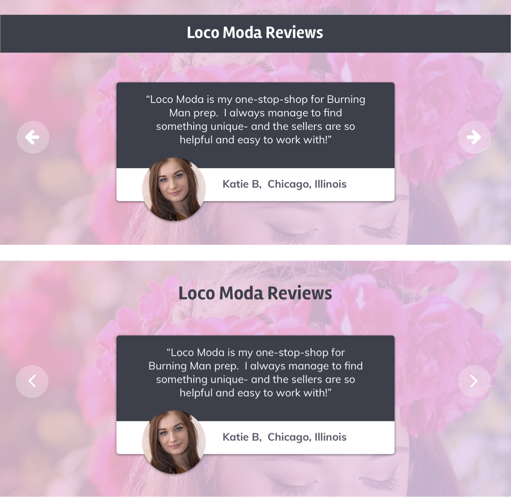

Hero Section
Hero Section
Fashion is prevalent in all of our lives. We’ve perhaps mastered the day-to-day, we know what to wear to work, or on the weekend when we relax. But when it comes to those special events, whether it’s a music festival, a renaissance faire, a themed party, or a cosplay event- shopping at the mall just doesn’t cut it. Loco Moda is a community of fashion lovers, creatives, artists, and designers, where shoppers looking for the perfect piece can find one-of-a-kind wearable art.
I did inital research, developed the concept of a fashion buying and selling community, took user surveys and analyzed data, designed wireframes for the entire site, further developed key pages, and fully rendered a landing page, as well as an item listing page.
The goal was to develop a site concept that allows customers to find one-of-a-kind clothing and accessories, and work with artists to have custom pieces made. This site would allow sellers around the world to showcase their designs, work directly with clients, and reach new customers.
Initially, I tapped into my community resources with a user survey I built on Iterate. I’m immersed in several online communities that are made up of big Etsy users (Etsy is perhaps the most direct competition to Loco Moda, and attracts a similar customer base), as well as clothing designers / creatives. Iterate allows for conditional questions, so I was able to get very specific with the survey- and I gained valuable insight. 80% of festival / special event goers who took the survey dress up specifically for the events they attend. Of these survey takers, only 2% didn’t spend any money on their special outfits- while 55% of users spent between $50 and $500 on outfit prep for a single event. On top of that, 15% spent over $500 to make sure they had the perfect outfit. This was just insight from ONE question- I gained a lot of valuable information from this detailed survey.
User Survey Results
The name Loco Moda means “crazy fashion”. I wanted a name that reads as classy, but also evokes feelings of a celebration, or a festival- and Loco Moda suited these needs. I did many iterations of logo designs including icons, but I decided it best to stick to a text-based logo that reads as fashion-forward and professional. I chose a color scheme that I knew would be a bit diffiult to pull off properly- but I knew what I wanted the site to evoke. Cyan, Royal blue, and an electric pink would give Loco Moda a futuristic, celebratory feel, while the cool greys would keep the site grounded, balanced, and professional.
Mood Board
I did user flows and a site map, which gave me insight into the functionality of my site. Even though I didn’t plan to fully flesh out every page, I wanted to understand what features would be necessary and how navigating the site would work.
I created quick thumbnail sketches as my low fidelity wireframes, and did a quick clickable prototype using Invision. By doing this, I further narrowed down what the most important features of the site would be. Wireframing also allowed me to determine what would set Loco Moda’s layout and navigation apart from competing sites, namely Etsy.

Loose Thumbnail Sketches
I then moved to high fidelity wireframes, which I developed for five pages: the dashboard page, an item listing page, a shop page, an inbox page, and of course, a landing page. The first four of these would be featured on the landing page in the features and seller features sections. I also developed the headlines and copy for the landing page at this point.
Inbox High Fidelity Wireframe
I did several versions of the landing page, so I could pick and choose sections based on what was reading strongest. After user testing, I determined that the top half from Layout 1 with the bottom half from Layout 4 would be the strongest combination of layouts, and I decided to add an additional feature section in between, with icons similar to the seller feature section in Layout 1.
Landing Page High Fidelity Wireframes / Layout Options
I decided to do a simplified form of the featured pages, so users could better absorb the accompanying text. After having done High Fidelity Wireframes, it was easy to translate the designs to full color and simplify from there.
HQ Simplified “Screenshots”
I also fleshed out the item listing page fully so I could understand the wireframe, simplified HQ sample, and finished HQ screen side-by-side. I paired with an Etsy shop owner, Bobby Weissenberg, who graciously allowed me to feature his flower crowns and shop info in my sample item listing page. I developed additional copy, the shop policies for example, to finish the page.
Item Listing Page Wireframe, Simplified HQ Screen, HQ Screen
I created the HQ Landing page, and made adjustments as I went. For example, the dark bars behind the section headers were adding uneccessary division and discord. I changed some of my symbol usage and gave elements within each section more room to breathe. I also changed my CTA buttons to pill shaped to better differentiate from the rectangular forms in each section. I also adjusted the spacing of the elements throughout the page to let everything breathe, especially since there was a decent amount of copy to be absorbed.
 
Hero / Review Sections Before and After
And with a few more minor tweaks here and there, I completed the Loco Moda Landing Page design.
I did a very in depth user study - which gave me a lot of information to work with right off the bat. While the simplified screenshots are less intimidating, I am having second thoughts. There could have been a better way to show screenshots of the site while not overpowering the list of features. If I were to revisit this project that would be one of the first things I’d take a second look at.
Overall, this project was a great learning experience between the benefits of in-depth user research, and lots of refinement. I definitely think having so many options for the landing page sections was a good move. I was able to ask the opinions of potential users and narrow down the most solid designs.
Going forward, I will take the same editing eye and continue to refine my designs more in future projects, base my work on detailed responses from user research, and reap the benefits of creating multiple iterations for user testing.